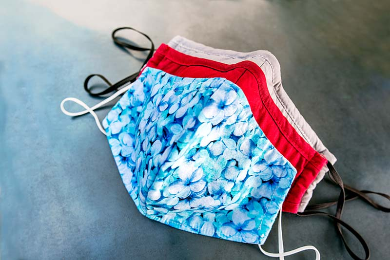
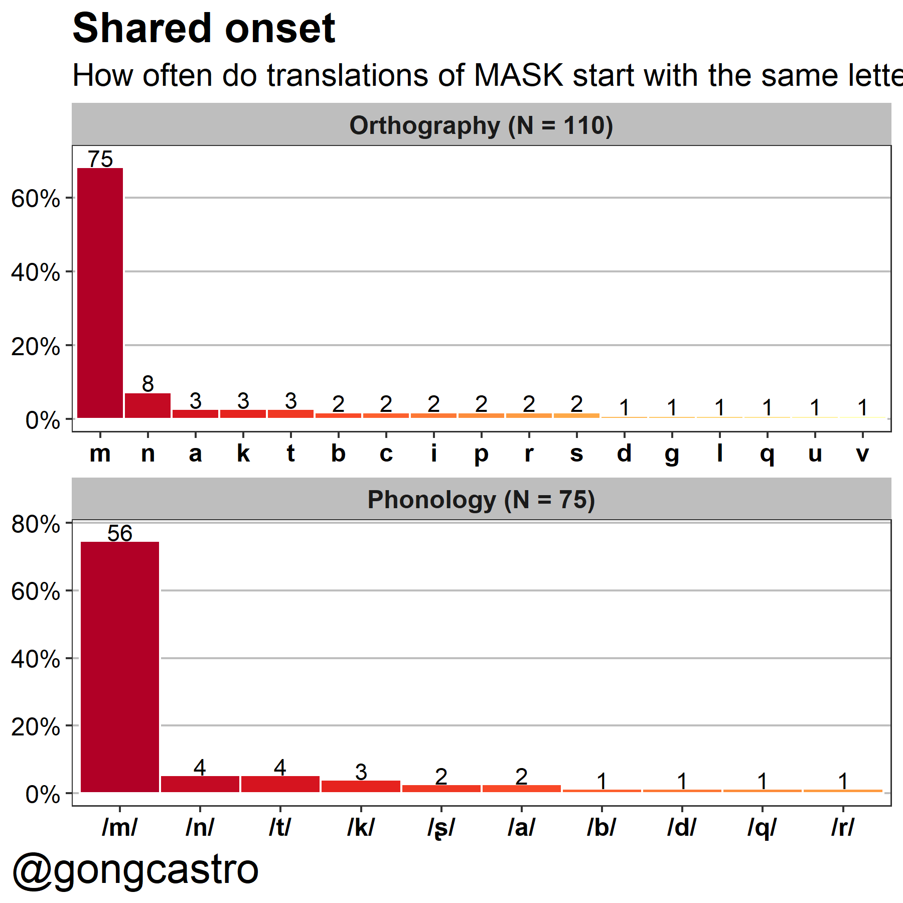

![]()
R version 4.2.2 (2022-10-31 ucrt)
Platform: x86_64-w64-mingw32/x64 (64-bit)
Running under: Windows 10 x64 (build 22000)
Matrix products: default
locale:
[1] LC_COLLATE=Spanish_Spain.utf8 LC_CTYPE=Spanish_Spain.utf8
[3] LC_MONETARY=Spanish_Spain.utf8 LC_NUMERIC=C
[5] LC_TIME=Spanish_Spain.utf8
attached base packages:
[1] stats graphics grDevices datasets utils methods base
other attached packages:
[1] htmltools_0.5.4 kableExtra_1.3.4 knitr_1.41 gt_0.8.0
[5] readxl_1.4.1 forcats_0.5.2 stringr_1.5.0 dplyr_1.0.10
[9] purrr_1.0.0 readr_2.1.3 tidyr_1.2.1 tibble_3.1.8
[13] ggplot2_3.4.0 tidyverse_1.3.2 quarto_1.2
loaded via a namespace (and not attached):
[1] httr_1.4.4 sass_0.4.4 jsonlite_1.8.4
[4] viridisLite_0.4.1 modelr_0.1.10 assertthat_0.2.1
[7] renv_0.16.0 googlesheets4_1.0.1 cellranger_1.1.0
[10] yaml_2.3.6 pillar_1.8.1 backports_1.4.1
[13] glue_1.6.2 digest_0.6.31 rvest_1.0.3
[16] colorspace_2.0-3 pkgconfig_2.0.3 broom_1.0.2
[19] haven_2.5.1 scales_1.2.1 webshot_0.5.4
[22] processx_3.8.0 svglite_2.1.0 stringdist_0.9.10
[25] later_1.3.0 tzdb_0.3.0 timechange_0.1.1
[28] googledrive_2.0.0 generics_0.1.3 ellipsis_0.3.2
[31] withr_2.5.0 cli_3.6.0 magrittr_2.0.3
[34] crayon_1.5.2 evaluate_0.19 ps_1.7.2
[37] fs_1.5.2 fansi_1.0.3 xml2_1.3.3
[40] tools_4.2.2 hms_1.1.2 gargle_1.2.1
[43] lifecycle_1.0.3 munsell_0.5.0 reprex_2.0.2
[46] compiler_4.2.2 systemfonts_1.0.4 rlang_1.0.6
[49] grid_4.2.2 rstudioapi_0.14 rmarkdown_2.19
[52] gtable_0.3.1 DBI_1.1.3 R6_2.5.1
[55] lubridate_1.9.0 fastmap_1.1.0 utf8_1.2.2
[58] commonmark_1.8.1 stringi_1.7.8 parallel_4.2.2
[61] Rcpp_1.0.9 vctrs_0.5.1 dbplyr_2.2.1
[64] tidyselect_1.2.0 xfun_0.36 
The ubiquity of masks has given psycholinguists a frequent-ish stimulus to use in experiments. This word is more form-similar across languages than one may think. I gathered a big-ish dataset with translation equivalents of the word mask across ~110 languages. I tweeted about this today, and wanted to dedicate some more lines to nuance.
The ubiquity of #masks😷 has given psycholinguists a frequent-ish stimulus to use in experiments. This word is more form-similar across languages than one may think. 🌐
— Gon García-Castro (@gongcastro) November 24, 2020
Here's how orthographically similar (the romanisations of) the translations of MASK are (N=110 pairs): pic.twitter.com/KMMdJke9SG
Here’s the data:
?(caption)
| Language | Orthography |
Orthography (romanisation) |
Phonology (IPA) |
|---|---|---|---|
| Afrikaans | masker | masker | /mɑːsk/ |
| Albanian | maskë | maskë | /maskaɾiʝa/ |
| Amharic | ጭምብል | ch'imibili | /tʃ'imibili/ |
| Arabic | قناع | qunae | /qinaːʕ/ |
| Armenian | դիմակ | dimak | /dimɑk/ |
| Azerbaijani | maska | maska | /maska/ |
| Bangla | মুখোশ | mukhosh | - |
| Basque | maskara | maskara | /maskaɾa/ |
| Belarusian | маска | maska | /maska/ |
| Bengali | মাস্ক | māska | /mask/ |
| Bosnian | maska | maska | /maska/ |
| Bulgarian | маска | maska | /maskə/ |
| Catalan | mascareta | mascareta | /məskəɾɛtə/ |
| Cebuano | maskara | maskara | /maskaɾa/ |
| Chichewa | amabisa | amabisa | /amaɓisa/ |
| Chinese Simplified | 手术口罩 | shǒushù kǒuzhào | /ʂə̌uʂʷù kʰə̌uʈʂàu/ |
| Chinese Traditional | 手術口罩 | shǒushù kǒuzhào | /ʂə̌uʂʷù kʰə̌uʈʂàu/ |
| Corsican | maschera | maschera | /maskeɾa/ |
| Croatian | maska | maska | /màska/ |
| Czech | maska | maska | /maska/ |
| Danish | maske | maske | /masgə / |
| Dutch | masker | masker | /mɑskər/ |
| English | mask | mask | /mɑːsk/ |
| Esperanto | masko | masko | /masko/ |
| Estonian | naamio | naamio | /naːmio/ |
| Tagalog (Filipino) | maskara | maskara | /maskaɾa/ |
| Finnish (Suomi) | naamio | naamio | /nɑːmio/ |
| Finnish (Suomi) | maskara | maskara | /mɑskɑrɑ/ |
| Finnish (Suomi) | ripsiväri | ripsiväri | /ripsiˌʋæri/ |
| French | masque | masque | /mɑːsk/ |
| Frisian | masker | masker | /masker/ |
| Galician | máscara | máscara | /maskaɾa/ |
| Georgian | ნიღაბი | nighabi | /niɣɑbi/ |
| German | Maske | maske | /maskə/ |
| Greek | μάσκα | máska | /maska/ |
| Gujarati | મહોરું | mahorũ | - |
| Hausa | abin rufe fuska | abin rufe fuska | - |
| Hawaiian | pale maka | pale maka | - |
| Hebrew | מסכה | masekháh | - |
| Hindi | मुखौटा | mukhauta | - |
| Hungarian | maszk | maszk | /mɒsk/ |
| Icelandic | gríma | gríma | /kriːma/ |
| Igbo | mkpu | mkpu | /mkk͡p~ɓ̥u/ |
| Indonesian | topeng | topeng | /topɛŋ/ |
| Indonesian | masker | masker | /maskər/ |
| Irish | masc | masc | /mɑːsk/ |
| Italian | maschera | mascherina | /maskeɾina/ |
| Japanese | マスク | masuku | /masɯkɯ/ |
| Javanese | mask | mask | - |
| Kannada | ಮಸುಕು | mukhavāḍa | - |
| Kazakh | маска | maska | /maska/ |
| Khmer | របាំង | rbang | - |
| Kinyarwanda | agapfukamunwa | agapfukamunwa | /agapfukamuŋwa/ |
| Korean | 마스크 | maseukeu | /ma̠sʰɯkxɯ/ |
| Kurdish (Kurmanji) | berrû | berrû | /beru/ |
| Kyrgyz | маска | maska | - |
| Lao | ຫນ້າກາກ | nā kāk | - |
| Latvian | maska | maska | /maska/ |
| Lithuanian | kaukė | kaukė | /kâˑʊ̯ke/ |
| Luxembourgish | mask | mask | /mask/ |
| Macedonian | маска | maska | /maska/ |
| Malay | topeng | topeng | /topɛŋ/ |
| Malay | کدوق | kedok | /kedok/ |
| Malayalam | മാസ്ക് | māsk | - |
| Maltese | maskra | maskra | /maskra/ |
| Māori | maruhā | maruhā | /maɾuha/ |
| Marathi | लपवू | lapavū | - |
| Mongolian | маск | mask | /mask/ |
| Myanmar (Burmese) | မျက်နှာဖုံး | myakhnahpum | /mjɛʔn̥əpʰóʊɴ/ |
| Nepali | मुखवटा | mukhavaṭā | - |
| Norwegian | maskara | maskara | /maskara/ |
| Odia | ମାସ୍କ | māska | - |
| Pashto | ماسک | mâsk-hâ | - |
| Persian (Farsi) | نقاب زدن | mask | /mask/ |
| Polish | maska | maska | /maskɔ̃/ |
| Portuguese | máscara | máscara | /maskaɾa/ |
| Punjabi | ਮਾਸਕ | māsaka | - |
| Romanian | masca | masca | /maska/ |
| Russian | маскировать | maskirovat' | /məskʲɪrɐˈvatʲ/ |
| Samoan | ufimata | ufimata | - |
| Scots Gaelic | masg | masg | /masɡ/ |
| Serbian | маскa | maska | - |
| Sesotho | pata | pata | - |
| Shona | chifukidzo | chifukidzo | - |
| Sindhi | ماسڪ | nutarian | - |
| Sinhala | වෙස්මුහුණ | vesmuhuṇa | - |
| Slovak | maskovať | maskovať | /maskovat/ |
| Slovenian | maska | maska | /maska/ |
| Somali | maaskaro | maaskaro | - |
| Spanish | máscara | máscara | /maskaɾa/ |
| Sundanese | topéng | topéng | /topɛŋ/ |
| Swahili | mask | mask | /mask/ |
| Swedish (Svenska) | mask | mask | /mask/ |
| Tajik | ниқоб | niqoʙ | - |
| Tamil | முகமூடி | mukamūṭi | - |
| Tatar | маска | maska | /maska/ |
| Telugu | ముసుగు | musugu | - |
| Thai | หน้ากาก | nâakàak | /naː˥˩kaːk̚˨˩/ |
| Turkish | maske | maske | /mask̟ʰe/ |
| Turkmen | maska | maska | - |
| Ukrainian | маскувати | maskuvaty | /mɑskɐ/ |
| Urdu | ماسک | mask | - |
| Uyghur | mask | mask | - |
| Uzbek | niqob | niqob | - |
| Vietnamese | khẩu trang | khẩu trang | /kʰəw˨˩˦ ʈaːŋ˧˧/ |
| Welsh | mwgwd | mwgwd | /mʊɡʊd/ |
| Xhosa | imaski | imaski | - |
| Yiddish | מאַסקע | maske | - |
| Yoruba | boju-abẹ | boju-abẹ | - |
| Zulu | imaski | imaski | - |
| https://drive.google.com/file/d/18SeJTiM2-JXR9SOqEg22wdkvNL3OxG3u/view?usp=sharing | |||
To compute the similarity of each pair of translation equivalents, I followed Floccia et al.’s (2018) procedure. For each pair of translation equivalents, I computed their Levenshtein distance as the number of insertions, deletions and replacements a string character has to go through to become identical to the other, and then divided this value by the number of characters of the longest of the two strings, so that all values range between 0 and 1. To compute the Levenshtein distance, I used the stringdist() function of the stringdist R package.
Orthographic distance
I first computed the orthographic distance between each pair of translation equivalents. Since some word forms make use of different alphabets, I first romanised all word forms. By romanised, I mean that I searched for the transcription of each word form in the Roman alphabet, and used it as input to compute the Levenshtein distance for each pair of translation equivalents. Here’s how orthographically similar (the romanisations of) the translations of mask are (N = 110 pairs):

Phonological distance
The phonological similarity/distance may be more informative. This time I searched for or generated with the help of a native speaker a phonological IPA transcription of each word-form. I then used this transcription as input to compute the phonological similarity of each pair of translation equivalents. A pitfall in this process is the fact that phonemes are almost never identical across languages, so even the common phoneme /m/ could vary slightly on its pronunciation in two languages. If this difference is encoded in the IPA transcription (as different characters), the Levenshtein distance will be inflated. For this reason, I simplified some IPA transcriptions to preserve this similarity. I also removed tones. This is terribly wrong from a linguistics perspective, but it’s the only way I see to be able to play with some reliable data. Also I’m no linguist, so you have no power here.

Here’s the same analysis performed on phonological transcriptions of a subset of those languages (N = 75 pairs, those I could find a reliable IPA transcription for or could find help from a native speaker):

Onsets
Most of the times, the phonological overlap comes from onset graphemes/phonemes. This is how many word-forms start with each onset:

Some disclaimers:
I tried ensuring that words referred to surgical masks (instead of other types of masks) with help from native speakers. Wrong translations may still have slipped in (or be just wrong). I wish I had time to double-check all of them (I did this for fun).
This analysis is probably affected by selection bias. I suspect many dissimilar translations are missing due to not being included in the translation apps I used (e.g. Google Translate). Feel free to contribute missing entries or make corrections!
Code and data
Session info
Reuse
Citation
BibTeX citation:
@online{garcia-castro2020,
author = {Garcia-Castro, Gonzalo},
title = {How Similar Is the Word “Mask” Across Languages?},
date = {2020-11-20},
langid = {en}
}
For attribution, please cite this work as:
Garcia-Castro, G. (2020, November 20). How similar is the word
“mask” across languages?